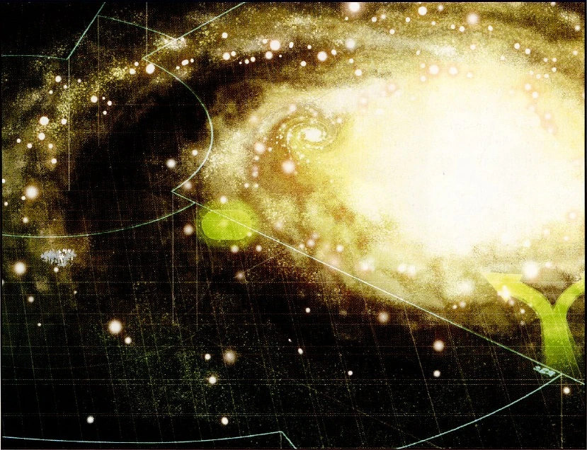
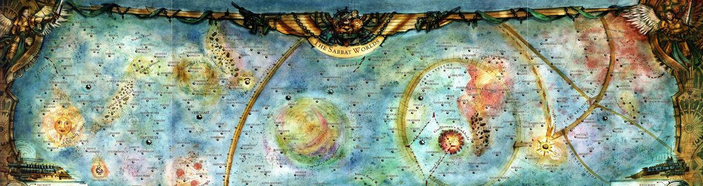

Sabbat Worlds
| Sabbat Worlds | |
|---|---|
| Sector of the Segmentum Pacificus | |
 Departmento Cartographicae chart of the Sabbat Worlds, on the rimward edge of the Segmentum Pacificus Artwork © Games Workshop | |
| Segmentum | Segmentum Pacificus, on the rimward edge |
| Capital | Khan Nobilis (former sector capital, lost in 740.M41) |
| Notable worlds | Balhaut, Tanith, Verghast, Hagia, Phantine, Herodor, Jago, Menazoid Epsilon, Fortis Binary |
| Governing body | The Civitas Imperialis (removed in 741.M41); the Administratum; the Sabbat Worlds Crusade |
| Status (as of M42) | Held by the forces of Chaos under an Archon; the Sabbat Worlds Crusade continues |
The Sabbat Worlds are a sector of more than one hundred known star systems along the rimward edge of the Segmentum Pacificus in the Imperium of Mankind. The sector was first annexed for Imperial colonisation in the 35th millennium, and it is named for Saint Sabbat, a young woman who received a vision from the Emperor and led the first crusade to bring the region into the Imperium. That crusade began in 500.M35 and lasted for 105 standard years. The sector was lost to the forces of Chaos in the 41st millennium, and it has been the target of an Imperial campaign of reconquest since 755.M41.[1]
The sector is divided into several territories, among them the Newfound Trailing Group, the Khan Group, the Cabal Systems, the Carcaradon Cluster and the Erinyes Group. Imperial charts record the sector as a frontier of the Segmentum Pacificus, and its worlds lie far from the Imperial core. Its exposure to the threats of the outer dark has made it a region of constant conflict.[1]
History
[edit]Saint Sabbat's Crusade
[edit]The Imperial annexation of the Sabbat Worlds began in the 35th millennium. The first crusade under Saint Sabbat began in 500.M35 and lasted 105 standard years. Her name is kept by the Imperial Cult, and her image is among the most widely painted in the sector's churches.[1][a]
The 37th and 38th millennia
[edit]By the 37th millennium humanity was well established across the sector, with an estimated population of some five trillion and a thriving local economy. Its exposure to the outer dark meant that control was always disputed with the forces of Chaos and with xenos. Through the 38th millennium the region suffered a series of wars with the Chaos-worshipping tribes of the Sanguinary Worlds, beyond its spinward edge. The Administratum came to regard the sector as a "troublesome province".[2]
The fall of the Sabbat Worlds
[edit]The decline began in the 41st millennium, when a charismatic and brutal Archon rallied the tribes of the Sanguinary Worlds to war. The assaults began from the trailward side of the sector. At first they were taken for the minor Chaos conflicts of the 38th millennium, but by 600.M41 it had become impossible to ignore the threat of Chaos Undivided. The Ruinous Powers had decided to take the whole region from the Imperium.[1]
The Imperium never meant to abandon the sector, but the size of the attack had been badly underestimated. Some worlds held out for a century. By 740.M41 the sector was fully in the hands of Chaos, and the Administratum reclassified it "unstable/hazardous". In the next year, 741.M41, the Civitas Imperialis, the centre of Imperial control in the region, withdrew from Khan Nobilis into the neighbouring sector of the Segmentum Pacificus. The sector was officially lost.[1]
Reconquest
[edit]In 755.M41 the Sabbat Worlds Crusade was launched to free the sector from the Archon and to restore it to the Golden Throne. The crusade has suffered heavy losses, and the Archon's forces have proved to be a serious threat to the Imperium. Imperial accounts nevertheless expect the crusade to succeed in the end.[3]
Geography
[edit]
The sector lies on the rimward edge of the Segmentum Pacificus, where the galaxy thins into the outer dark. Its star-systems lie in loose clusters, and the distances between them are large. The Newfound Trailing Group, the Khan Group and the Cabal Systems form its best-known territories.[1]
Notable worlds
[edit]- '''Balhaut''': the site of a battle of the Sabbat Worlds Crusade and of Operation Redrake.
- '''Tanith''': a world whose people were among the sector's best-known fighters, raised into the Astra Militarum.
- '''Verghast''': a world of the Newfound Trailing Group.
- '''Khan Nobilis''': the former sector capital, abandoned in 741.M41.
- '''Hagia''', '''Phantine''', '''Herodor''', '''Jago''', '''Menazoid Epsilon''' and '''Fortis Binary''': worlds that appear in the sector's Administratum registers.
Governance
[edit]Before 741.M41 the sector was governed from the Civitas Imperialis. Since then its worlds have been ruled in name by the Administratum, and by the commanders of the Sabbat Worlds Crusade in the areas that have been retaken. The Archon rules the lost worlds in the name of Chaos.[2]
Timeline
[edit]| Date | Event |
|---|---|
| 35th millennium | The Sabbat Worlds are first annexed for Imperial colonisation |
| 500.M35 | Saint Sabbat begins her crusade to bring the region into the Imperium |
| 605.M35 (estimated) | The first crusade ends after 105 standard years |
| 37th millennium | The sector has an estimated population of five trillion |
| 38th millennium | Wars with the Chaos tribes of the Sanguinary Worlds |
| 600.M41 | The Ruinous Powers' threat to the sector becomes clear |
| 740.M41 | The sector is fully in the hands of Chaos; the Administratum reclassifies it |
| 741.M41 | The Civitas Imperialis leaves Khan Nobilis for the Segmentum Pacificus |
| 755.M41 | The Sabbat Worlds Crusade is launched |
See also
[edit]Notes
[edit]- ^ The date of Saint Sabbat's birth is not recorded. The dates given here are for the crusade she is said to have led.
References
[edit]- ^ a b c d e f Abnett, Dan. Double Eagle (novel). Black Library. Abnett, Dan. The Founding (Gaunt's Ghosts Omnibus) (novel). Black Library.
- ^ a b Abnett, Dan. The Saint (Gaunt's Ghosts Omnibus) (novel). Black Library. Abnett, Dan. The Lost (Gaunt's Ghosts Omnibus) (novel). Black Library.
- ^ Map), Dan Abnett (Sabbat Worlds. The Warmaster Special Edition (novel). Black Library. Sabbat Worlds Anthology (Anthology) edited by Dan Abnett.